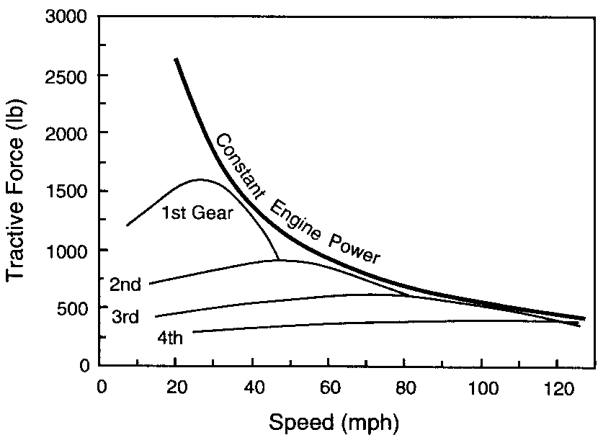
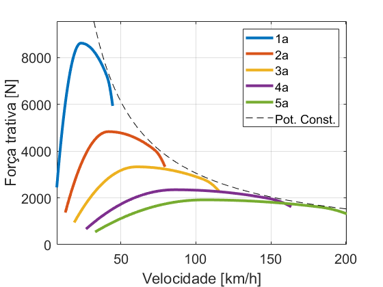
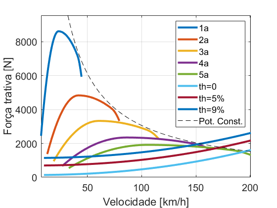
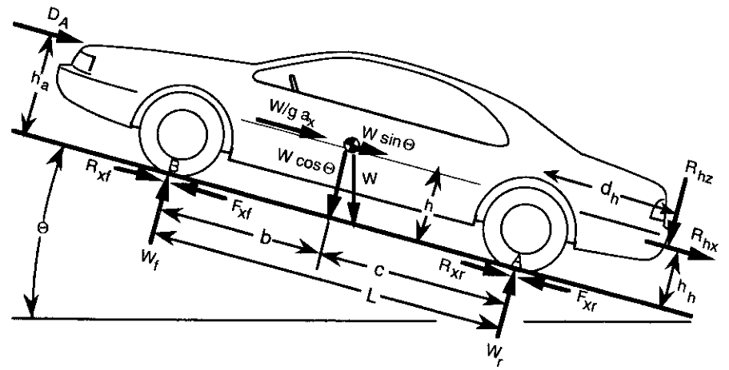
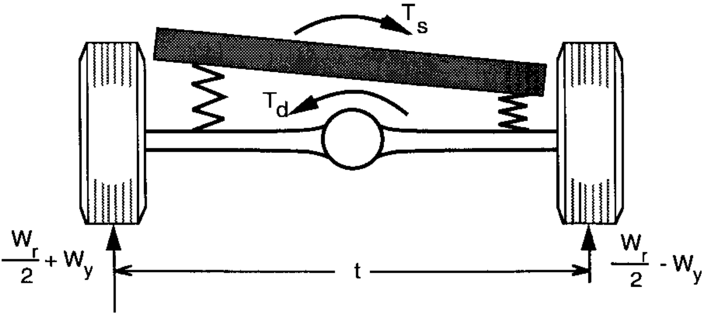
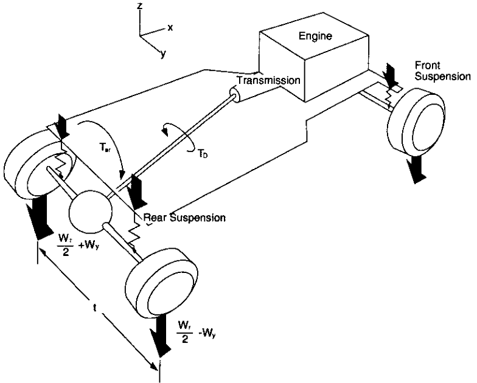

NMA380 - Dinâmica Veicular
Dinâmica longitudinal
Limites de propulsão
Objetivos
- Limite de potência
- Força de tração máxima
- Curvas de força trativa
- Velocidade máxima
- Limite de aderência
- Tração traseira com diferencial aberto
- Tração traseira com diferencial bloqueado
- Tração dianteira com diferencial aberto
- Tração dianteira com diferencial bloqueado
Limite de potência
Curvas de força trativa
\((\mathrm{M} + \mathrm{M}_{\mathrm{r}}) \mathrm{a}_{\mathrm{x}}=\frac{\mathrm{T}_{\mathrm{e}} \mathrm{N}_{\mathrm{tf}} \eta_{\mathrm{tf}}}{\mathrm{r}}-\mathrm{R}_{\mathrm{X}}-\mathrm{D}_{\mathrm{A}}-\mathrm{R}_{\mathrm{hx}}-\mathrm{W} \sin \Theta\)
\(\mathrm{v}_{\mathrm{x}} = \frac{2 \pi}{60} \frac{\mathrm{r}}{\mathrm{N}_{\mathrm{tf}}} \mathrm{RPM} \)
Exercício 1
Considere o Escort XR3. Qual é a força de tração máxima em 3a marcha e em que velocidade ela ocorre? Motor: 174 Nm @ 3200 e 85 kW @ 5600. Pneu: 185/60R14.
Transmissão (\(\eta\)=0.96):
| Transmissão | Relação |
|---|---|
| 1a marcha | 3,78 |
| 2a marcha | 2,12 |
| 3a marcha | 1,46 |
| 4a marcha | 1,03 |
| 5a marcha | 0,84 |
| Diferencial | 3,944 |

Complementos: Dados do carro, Código, Curva do motor (csv)
Exercício 2
Determine as curvas da força de tração do Escort para cada marcha em função da velocidade longitudinal. Motor: 174 Nm @ 3200 e 85 kW @ 5600. Pneu: 185/60R14.
Transmissão (\(\eta\)=0.96):
| Transmissão | Relação |
|---|---|
| 1a marcha | 3,78 |
| 2a marcha | 2,12 |
| 3a marcha | 1,46 |
| 4a marcha | 1,03 |
| 5a marcha | 0,84 |
| Diferencial | 3,944 |
Complementos: Dados do carro, Código, Curva do motor (csv)
Exercício 2 (cont.)
Exercício 3
Inclua as forças resistivas no gráfico de força de tração desenvolvido até aqui. Considere as forças \(D_A\), \(R_X\) e \(R_g\).
Dados:
- \(m\)=1145kg
- \(C\)=0.35
- \(A\)=1.91 m2

Complementos: Dados do carro, Código, Curva do motor (csv)
Exercício 3 (cont.)
Limite de aderência
Limite de aderência
Se houver potência suficientemente alta, a tração é limitada pelo atrito disponível:
\(\mathrm{F}_{\mathrm{x}}=\mu \mathrm{W}\)
Transferência de carga lateral - 2D
Transferência de carga lateral - 3D
Tração traseira e dianteira
Limite de aderência
(1) \(\mathrm{F}_{\mathrm{x}}=\mu \mathrm{W}\)
Transferência de carga lateral
(2) \(\mathrm{W}_{\mathrm{y}}=\left(\mathrm{T}_{\mathrm{d}}-\mathrm{T}_{\mathrm{s}}\right) / \mathrm{t}\)
Lei de Hooke
(3) \(\mathrm{T}_{\mathrm{sf}}=\mathrm{K}_{\phi \mathrm{f}} \mathrm{T}_{\mathrm{d}} /\left(\mathrm{K}_{\phi \mathrm{f}}+\mathrm{K}_{\phi \mathrm{r}}\right)\)
(4) \(\mathrm{T}_{\mathrm{sr}}=\mathrm{K}_{\phi \mathrm{r}} \mathrm{T}_{\mathrm{d}} /\left(\mathrm{K}_{\phi \mathrm{f}}+\mathrm{K}_{\phi \mathrm{r}}\right)\)
Lei de Hooke
(5) \(\mathrm{T}_{\mathrm{d}}=\mathrm{F}_{\mathrm{x}} \mathrm{r} / \mathrm{N}_{\mathrm{f}}\)
Carga sobre o eixo
(6) \(\mathrm{W}_{\mathrm{f}}=\mathrm{W}\left(\frac{\mathrm{c}}{\mathrm{L}}-\frac{\mathrm{a}_{\mathrm{x}}}{\mathrm{g}} \frac{\mathrm{h}}{\mathrm{L}}\right)\)
(7) \(\mathrm{W}_{\mathrm{r}}=\mathrm{W}\left(\frac{\mathrm{b}}{\mathrm{L}}+\frac{\mathrm{a}_{\mathrm{x}}}{\mathrm{g}} \frac{\mathrm{h}}{\mathrm{L}}\right)\)
Tração traseira
Com diferencial aberto
\(\mathrm{F}_{\mathrm{xmax}}=\frac{\mu \frac{\mathrm{Wb}}{\mathrm{L}}}{1-\frac{\mathrm{h}}{\mathrm{L}} \mu+\frac{2 \mu \mathrm{r}}{\mathrm{N}_{\mathrm{f}} \mathrm{t}} \frac{\mathrm{K}_{\phi}}{\mathrm{K}_{\phi}}}\)
Com diferencial bloqueado
\(\mathrm{F}_{\mathrm{xmax}}=\frac{\mu \frac{\mathrm{Wb}}{\mathrm{L}}}{1-\frac{\mathrm{h}}{\mathrm{L}} \mu}\)
Tração dianteira
Com diferencial aberto
\(\mathrm{F}_{\mathrm{xmax}}=\frac{\mu \frac{\mathrm{Wc}}{\mathrm{L}}}{1+\frac{\mathrm{h}}{\mathrm{L}} \mu+\frac{2 \mu \mathrm{r}}{\mathrm{N}_{\mathrm{f}} \mathrm{t}} \frac{\mathrm{K}_{\phi \mathrm{r}}}{\mathrm{K}_{\phi}}}\)
Com diferencial bloqueado
\(\mathrm{F}_{\mathrm{xmax}}=\frac{\mu \frac{\mathrm{W} \mathrm{c}}{\mathrm{L}}}{1+\frac{\mathrm{h}}{\mathrm{L}} \mu}\)
Exercício 4
Considere um veículo de tração traseira sobre uma pista de atrito \(\mu\)=0.62. Determine a força de tração máxima disponível para a propulsão do veículo e a aceleração máxima associada com diferencial aberto e bloqueado.
| Parâmetro | Valor | Unidade |
|---|---|---|
| Massa sobre eixo dianteiro | 952,544 | kg |
| Massa sobre eixo traseiro | 839,1459 | kg |
| Altura do centro de massa | 0,5334 | m |
| Distância entre eixos | 2,7432 | m |
| Bitola | 1,4986 | m |
| Relação de transmissão do diferencial | 2,9 | Nm/grau |
| Rigidez à rolagem da suspensão dianteira | 1559.190641 | Nm/grau |
| Rigidez à rolagem da suspensão traseira | 379.629026 | Nm/grau |
Complementos: Código